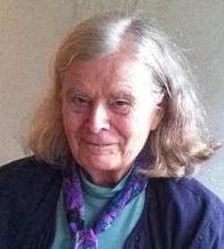

Karen Uhlenbeck | |
|---|---|
 Uhlenbeck in 2019 | |
| Born | Karen Keskulla August 24, 1942 |
| Education | University of Michigan, Ann Arbor (BA) New York University Brandeis University (MA, PhD) |
| Known for | Uhlenbeck's singularity theorem Uhlenbeck's compactness theorem Calculus of variations Geometric analysis Minimal surfaces Yang–Mills theory |
| Spouses |
|
| Awards | MacArthur Fellowship Noether Lecturer (1988) National Medal of Science (2000) Leroy P. Steele Prize (2007) Abel Prize (2019)[1] Leroy P. Steele Prize (2020) |
| Scientific career | |
| Fields | Mathematics |
| Institutions | Institute for Advanced Study University of Texas, Austin University of Chicago University of Illinois, Chicago University of Illinois, Urbana-Champaign |
| Thesis | The calculus of variations and global analysis (1968) |
| Richard Palais | |
.jpg){kind=link}
Karen Keskulla Uhlenbeck ForMemRS (born August 24, 1942) is an American mathematician and one of the founders of modern geometric analysis.[2] She is a professor emerita of mathematics at the University of Texas at Austin, where she held the Sid W. Richardson Foundation Regents Chair.[3][4][5] She is currently a distinguished visiting professor at the Institute for Advanced Study[6] and a visiting senior research scholar at Princeton University.[7]
Uhlenbeck was elected to the American Philosophical Society in 2007.[8] She won the 2019 Abel Prize for "her pioneering achievements in geometric partial differential equations, gauge theory, and integrable systems, and for the fundamental impact of her work on analysis, geometry and mathematical physics."[9] She is the first, and so far only, woman to win the prize since its inception in 2003.[10][11] She donated half of the prize money to organizations which promote more engagement of women and other minorities in research mathematics.
Life and career
Uhlenbeck was born in Cleveland, Ohio, to engineer Arnold Keskulla and schoolteacher and artist Carolyn Windeler Keskulla. While she was a child, the family moved to New Jersey.[12] Uhlenbeck's maiden name, Keskulla, comes from Keskküla and from her grandfather who was Estonian, while her current surname is Dutch.[13] Uhlenbeck received her B.A. (1964) from the University of Michigan.[3][5] She began her graduate studies at the Courant Institute of Mathematical Sciences at New York University, and married biophysicist Olke C. Uhlenbeck (the son of physicist George Uhlenbeck) in 1965. When her husband went to Harvard, she moved with him and restarted her studies at Brandeis University, where she earned an MA (1966) and PhD (1968) under the supervision of Richard Palais.[3][5] Her doctoral dissertation was titled The Calculus of Variations and Global Analysis.[14]
After temporary jobs at the Massachusetts Institute of Technology and University of California, Berkeley, and having difficulty finding a permanent position with her husband because of the "anti-nepotism" rules then in place that prevented hiring both a husband and wife even in distinct departments of a university, she took a faculty position at the University of Illinois at Urbana–Champaign in 1971.[15] However, she disliked Urbana and moved to the University of Illinois at Chicago in 1976 as well as separating from her first husband Olke Uhlenbeck in the same year.[13] From 1979 to 1981 Uhlenbeck served on the Council of the AMS as a Member at Large.[16] She moved again to the University of Chicago in 1983.[13] In 1988, by which time she had married mathematician Robert F. Williams,[13] she moved to the University of Texas at Austin as the Sid W. Richardson Foundation Regents Chairholder.[3][4][5] Uhlenbeck is currently a professor emerita at the University of Texas at Austin,[17] a visiting associate at the Institute for Advanced Study and a visiting senior research scholar at Princeton University.[7]
Research
Uhlenbeck is one of the founders of the field of geometric analysis, a discipline that uses differential geometry to study the solutions to differential equations and vice versa.[18] She has also contributed to topological quantum field theory and integrable systems.[3][19]
Together with Jonathan Sacks in the early 1980s, Uhlenbeck established regularity estimates that have found applications to studies of the singularities of harmonic maps and the existence of smooth local solutions to the Yang–Mills–Higgs equations in gauge theory.[EMI][MIC][RSY] In particular, Simon Donaldson describes their joint 1981 paper The existence of minimal immersions of 2-spheres[EMI] as a "landmark paper... which showed that, with a deeper analysis, variational arguments can still be used to give general existence results" for harmonic map equations.[20] Building on these ideas, Uhlenbeck initiated a systematic study of the moduli theory of minimal surfaces in hyperbolic 3-manifolds (also called minimal submanifold theory) in her 1983 paper, Closed minimal surfaces in hyperbolic 3-manifolds.[21][CMS]
In particular, her work is described by Simon Donaldson in a survey of Yang–Mills geometry as foundational in the analytic aspects of the calculus of variations associated with the Yang–Mills functional.[22] A wider survey of her contributions to the field of calculus of variations was published by Simon Donaldson in the March 2019 issue of Notices of the American Mathematical Society; Donaldson describes the work of Uhlenbeck, along with Shing-Tung Yau, Richard Schoen and several others, as developing a...
...whole circle of ideas and techniques involving the dimension of singular sets, monotonicity, 'small energy' results, tangent cones, etc. [that] has had a wide-ranging impact in many branches of differential geometry over the past few decades and forms the focus of much current research activity.[20]
Outreach
In 1991, Uhlenbeck co-founded, with Herbert Clemens and Dan Freed, the Park City Mathematics Institute (PCMI) with the mission to "provide an immersive educational and professional development opportunity for several parallel communities from across the larger umbrella of the mathematics profession."[23][7] Uhlenbeck also co-founded the Women and Mathematics Program at the Institute for Advanced Study "with the mission to recruit and retain more women in mathematics."[24][7] British theoretical physicist and author Jim Al-Khalili describes Uhlenbeck as a "role model" for her work in promoting a career in mathematics to young people, particularly women.[25]
Personal life
Uhlenbeck is a self-described "messy reader" and "messy thinker", with boxes of books stacked on her desk at Princeton's Institute for Advanced Study. In spontaneous remarks made to Institute colleagues after winning the Abel Prize in March 2019, Uhlenbeck noted that for lack of prominent female role models during her apprenticeship in the field of mathematics, she had instead emulated chef Julia Child: "She knew how to pick the turkey up off the floor and serve it".[26]
Awards and honors
In March 2019, Uhlenbeck became the first woman to receive the Abel Prize,[27][28] with the award committee citing the decision for "her pioneering achievements in geometric partial differential equations, gauge theory and integrable systems, and for the fundamental impact of her work on analysis, geometry and mathematical physics."[9] Hans Munthe-Kaas, who chaired the award committee, stated that "Her theories have revolutionised our understanding of minimal surfaces, such as more general minimisation problems in higher dimensions".[25] She donated half of the cash prize to two organizations, the EDGE Foundation (which subsequently set up the Karen EDGE Fellowship Program), and the Institute for Advanced Study's Women and Mathematics (WAM) Program.[29]
Uhlenbeck also won the National Medal of Science in 2000,[3][4][30][31] and the Leroy P. Steele Prize for Seminal Contribution to Research of the American Mathematical Society in 2007, "for her foundational contributions in analytic aspects of mathematical gauge theory",[3][4] based on her 1982 papers "Removable singularities in Yang–Mills fields"[RSY] and "Connections with bounds on curvature".[CLP] She became a MacArthur Fellow in 1983[3][4] and a Fellow of the American Academy of Arts and Sciences in 1985.[3][4] She was elected as a member of the National Academy of Sciences in 1986.[3][4][5] She became a Guggenheim Fellow in 2001,[32] an honorary member of the London Mathematical Society in 2008,[3] and a Fellow of the American Mathematical Society in 2012.[33]
The Association for Women in Mathematics included her in the 2020 class of AWM Fellows for "her groundbreaking and profound contributions to modern geometric analysis; for establishing a career as one of the greatest mathematicians of our time, despite the considerable challenges facing women when she entered the field; for using her experiences navigating these challenges to create and sustain programs to address them for future generations of women. For a lifetime of breaking barriers; and for being the first woman to win the Abel Prize".[34]
She was the Noether Lecturer of the Association for Women in Mathematics in 1988.[19] In 1990, she was a plenary speaker at the International Congress of Mathematicians, as only the second woman (after Emmy Noether) to give such a lecture.[3][4]
Her other awards include the University of Michigan alumna of the year (1984),[5] the Sigma Xi Common Wealth Award for Science and Technology (1995),[5] and honorary doctorates from the University of Illinois at Urbana–Champaign (2000),[3] Ohio State University (2001),[3][35] University of Michigan (2004),[3] Harvard University (2007),[3] and Princeton University (2012).[36]
Selected publications
Books
| I4M. | Freed, Daniel S.; Uhlenbeck, Karen K. (1984). Instantons and Four-Manifolds. Mathematical Sciences Research Institute Publications. Vol. 1. Springer-Verlag, New York. doi:10.1007/978-1-4684-0258-2. ISBN 0-387-96036-8. 2nd ed., 1991. Translated into Russian by Yu. P. Solovyev, Mir, 1988.[37]
|
Research articles
| RNL. | Uhlenbeck, Karen (1977). "Regularity for a class of non-linear elliptic systems". Acta Mathematica. 138 (3–4): 219–240. doi:10.1007/bf02392316. MR 0474389. S2CID 11166753.
|
| EMI. | Sacks, Jonathan; Uhlenbeck, Karen (1981). "The existence of minimal immersions of 2-spheres" (PDF). Annals of Mathematics. Second Series. 113 (1): 1–24. doi:10.2307/1971131. JSTOR 1971131. MR 0604040.
|
| MIC. | Sacks, J.; Uhlenbeck, K. (1982). "Minimal immersions of closed Riemann surfaces" (PDF). Transactions of the American Mathematical Society. 271 (2): 639–652. doi:10.1090/s0002-9947-1982-0654854-8. JSTOR 1998902. MR 0654854. Archived from the original (PDF) on August 27, 2017.
|
| RSY. | Uhlenbeck, Karen K. (1982). "Removable singularities in Yang–Mills fields". Communications in Mathematical Physics. 83 (1): 11–29. Bibcode:1982CMaPh..83...11U. doi:10.1007/bf01947068. MR 0648355. S2CID 122376700. Announced in the Bulletin of the American Mathematical Society 1 (3): 579–581, MR 0526970
|
| CLP. | Uhlenbeck, Karen K. (1982). "Connections with bounds on curvature". Communications in Mathematical Physics. 83 (1): 31–42. Bibcode:1982CMaPh..83...31U. doi:10.1007/bf01947069. MR 0648356. S2CID 124912932.
|
| RHM. | Schoen, Richard; Uhlenbeck, Karen (1982). "A regularity theory for harmonic maps". Journal of Differential Geometry. 17 (2): 307–335. doi:10.4310/jdg/1214436923. MR 0664498.
|
| CMS. | Uhlenbeck, Karen K. (1983). "Closed minimal surfaces in hyperbolic 3-manifolds". In Bombieri, Enrico (ed.). Seminar on Minimal Submanifolds. Annals of Mathematics Studies. Vol. 103. Princeton University Press. pp. 147–168. ISBN 9780691083247. JSTOR j.ctt1b7x7tv.10. MR 0795233.
|
| EHY. | Uhlenbeck, Karen; Yau, Shing-Tung (1986). "On the existence of Hermitian-Yang-Mills connections in stable vector bundles". Communications on Pure and Applied Mathematics. 39: S257–S293. doi:10.1002/cpa.3160390714. MR 0861491.
|
| HML. | Uhlenbeck, Karen (1989). "Harmonic maps into Lie groups: classical solutions of the chiral model". Journal of Differential Geometry. 30 (1): 1–50. doi:10.4310/jdg/1214443286. MR 1001271.
|
| HMY. | Uhlenbeck, Karen (1992). "On the connection between harmonic maps and the self-dual Yang-Mills and the sine-Gordon equations". Journal of Geometry and Physics. 8 (1–4): 283–316. Bibcode:1992JGP.....8..283U. doi:10.1016/0393-0440(92)90053-4. MR 1165884.
|
See also
References
- ^ Holden, Helge; Piene, Ragni, eds. (2024). "A journey through the mathematical world of Karen Uhlenbeck by Simon Donaldson". The Abel Prize 2018-2022. Springer-Verlag. arXiv preprint
- ^ Bill Chappell (March 19, 2019). "U.S. Mathematician Becomes First Woman To Win Abel Prize, 'Math's Nobel'". NPR. Retrieved April 8, 2019.
- ^ a b c d e f g h i j k l m n o p O'Connor, John J.; Robertson, Edmund F. "Karen Uhlenbeck". MacTutor History of Mathematics Archive. University of St Andrews.
- ^ a b c d e f g h "Karen Uhlenbeck". Biographies of Women Mathematicians. Agnes Scott College.
- ^ a b c d e f g Katterman, Lee (December 6, 1999). "Michigan Great Karen K. Uhlenbeck: Pioneer in mathematical analysis—and for women mathematicians". The University Record. University of Michigan. Archived from the original on June 11, 2011. Retrieved December 19, 2014.
- ^ "Karen Uhlenbeck". Institute for Advanced Study. Retrieved August 7, 2019.
- ^ a b c d Garrand, Danielle (March 19, 2019). "A woman just won the prize known as "math's Nobel" — for the first time ever". CBS News. Retrieved March 19, 2019.
- ^ "APS Member History". search.amphilsoc.org. Retrieved May 17, 2021.
- ^ a b "2019: Karen Keskulla Uhlenbeck". The Abel Prize. Retrieved July 22, 2022.
- ^ Meilan Solly (March 20, 2019). "Karen Uhlenbeck Is the First Woman to Win Math's Top Prize". Smithsonian Magazine. Retrieved April 8, 2019.
- ^ Chang, Kenneth (March 19, 2019). "Karen Uhlenbeck Is First Woman to Receive Abel Prize in Mathematics – Dr. Uhlenbeck helped pioneer geometric analysis, developing techniques now commonly used by many mathematicians". The New York Times. Retrieved March 19, 2019.
- ^ Al-Khalili, Jim. "A biography of Karen Keskulla Uhlenbeck". abelprize.no. Archived from the original on July 15, 2019. Retrieved July 15, 2019.
- ^ a b c d Allyn Jackson (2018). "Interview with Karen Uhlenbeck". Celebratio Mathematica.
- ^ Karen Uhlenbeck at the Mathematics Genealogy Project
- ^ Cooke, Roger (2005). The History of Mathematics: A Brief Course (2. ed.). Hoboken, NJ: Wiley-Interscience. p. 76. ISBN 978-0-471-44459-6.
- ^ "AMS Committees". American Mathematical Society. Retrieved March 28, 2023.
- ^ "Mathematics Emeritus Faculty". University of Texas at Austin. Retrieved March 16, 2024.
- ^ Klarreich, Erica (March 19, 2019). "Karen Uhlenbeck, Uniter of Geometry and Analysis, Wins Abel Prize". Quanta.
- ^ a b "Karen Uhlenbeck". Profiles of Women in Mathematics: The Emmy Noether Lectures. Association for Women in Mathematics. Archived from the original on January 12, 2015. Retrieved December 19, 2014..
- ^ a b Donaldson, Simon (2019). "Karen Uhlenbeck and the Calculus of Variations". Notices of the American Mathematical Society. 66 (3): 303–313. doi:10.1090/noti1806.
- ^ Huang, Zheng; Wang, Biao (2017). "Closed Minimal Surfaces in Cusped Hyperbolic three-manifolds" (PDF). Geometriae Dedicata. 189 (1): 37–57. arXiv:1507.04818. doi:10.1007/s10711-016-0215-8. S2CID 67774341.
- ^ Donaldson, Simon K. (2005). "Yang–Mills theory and Geometry" (PDF).
- ^ "About PCMI: Mission, History, Summer Session". Institute for Advanced Study. January 27, 2018. Retrieved March 19, 2019.
- ^ "Women and Mathematics". Institute for Advanced Study. August 5, 2008. Retrieved March 19, 2019.
- ^ a b Pallab Ghosh (March 19, 2019). "Bubble maths researcher wins top award". BBC. Retrieved March 19, 2019.
- ^ Roberts, Siobhan (April 8, 2019). "In Bubbles, She Sees a Mathematical Universe". The New York Times. Retrieved April 9, 2019.
- ^ "US Mathematician Becomes First Woman To Win Prestigious Abel Prize". NDTV.com. Retrieved March 20, 2019.
- ^ "Bubble maths researcher wins top award". BBC News. March 19, 2019. Retrieved June 29, 2026.
- ^ Gift from Uhlenbeck Funds Karen EDGE Fellowship Notices of the AMS, Vol 67, No 2, pp 228–230
- ^ "The President's National Medal of Science: Recipient Details". National Science Foundation. Retrieved December 13, 2009.
- ^ "UT Austin mathematics professor wins National Medal of Science". Univ. of Texas. November 13, 2000. Archived from the original on November 5, 2012. Retrieved December 19, 2014..
- ^ "Three UT Austin professors win prestigious Guggenheim Fellowships". Univ. of Texas. April 23, 2001. Retrieved December 19, 2014.
{{cite web}}: CS1 maint: deprecated archival service (link). - ^ "List of Fellows". American Mathematical Society. Retrieved August 28, 2013..
- ^ "2020 Class of AWM Fellows". Association for Women in Mathematics. Retrieved November 8, 2019.
- ^ "Honorary Degree – University Awards & Recognition – The Ohio State University". osu.edu. Retrieved March 19, 2019.
- ^ "Princeton awards six honorary degrees". Princeton University. Retrieved March 8, 2019.
- ^ Reviews of Instantons and Four-Manifolds:
- Bourguignon, J.-P. zbMATH. Zbl 0559.57001.
{{cite journal}}: CS1 maint: untitled periodical (link) - Eells, J. (July 1985). Bulletin of the London Mathematical Society. 17 (4): 410–411. doi:10.1112/blms/17.4.410.
{{cite journal}}: CS1 maint: untitled periodical (link) - Hitchin, N. J. Mathematical Reviews. MR 0757358.
{{cite journal}}: CS1 maint: untitled periodical (link) - Parker, Thomas (March 1987). SIAM Review. 29 (1): 160–162. doi:10.1137/1029032. JSTOR 2030965.
{{cite journal}}: CS1 maint: untitled periodical (link) - Stern, Ronald J. (March 14, 1986). "Four-dimensional topology". Science. 231 (4743): 1316–1317. doi:10.1126/science.231.4743.1316. JSTOR 1696164. PMID 17839573.
- Bourguignon, J.-P. zbMATH. Zbl 0559.57001.
Further reading
- "Complete Bibliography". Celebratio Mathematica.
- Clifford Henry Taubes (2018). "Karen Uhlenbeck's contributions to gauge theoretic analysis". Celebratio Mathematica.
- Allyn Jackson (2018). "Interview with Karen Uhlenbeck". Celebratio Mathematica.
- Karen Uhlenbeck (1996). "Coming to grips with success: a profile of Karen Uhlenbeck". Celebratio Mathematica.
- Lee Katterman (1999). "Michigan Great Karen K. Uhlenbeck: Pioneer in mathematical analysis — and for women mathematicians". Celebratio Mathematica.
- Claudia Henrion (1997). "A profile of Karen Uhlenbeck". Celebratio Mathematica.
- "UT Austin mathematics professor wins National Medal of Science". Celebratio Mathematica. The University of Texas, Austin. 2000.
External links
 Quotations related to Karen Uhlenbeck at Wikiquote
Quotations related to Karen Uhlenbeck at Wikiquote- Official website
- Dundas, Bjørn Ian; Skau, Christian (March 2020). "Interview with Abel Laureate Karen Uhlenbeck" (PDF). Notices of the American Mathematical Society. 67 (3): 393–403. doi:10.1090/noti2049.
- Karen Uhlenbeck - Biography
- Karen UHLENBECK
- Karen Uhlenbeck on INSPIRE-HEP